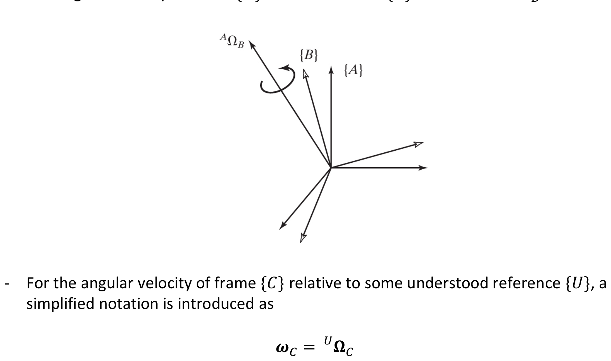
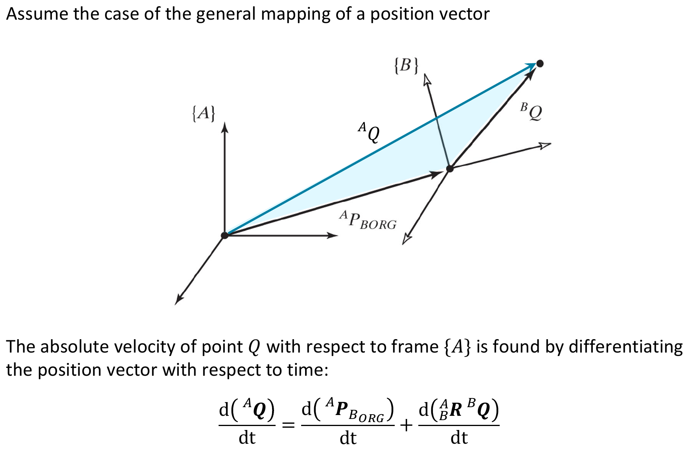
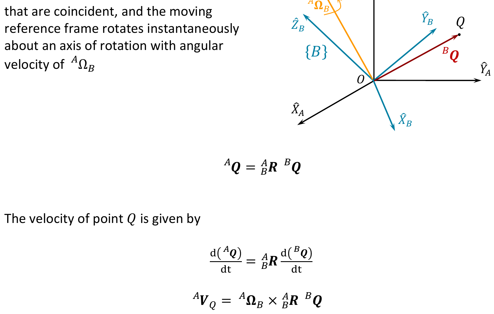
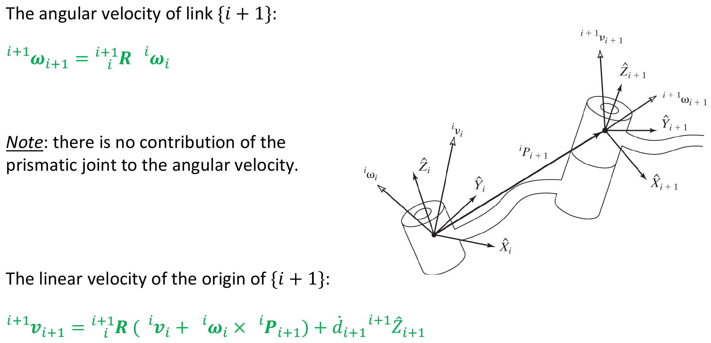
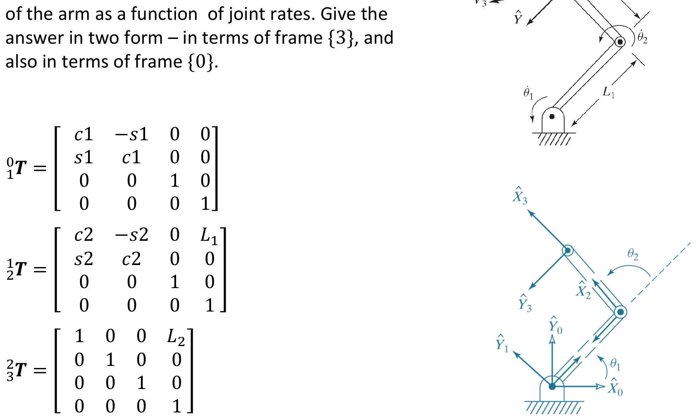
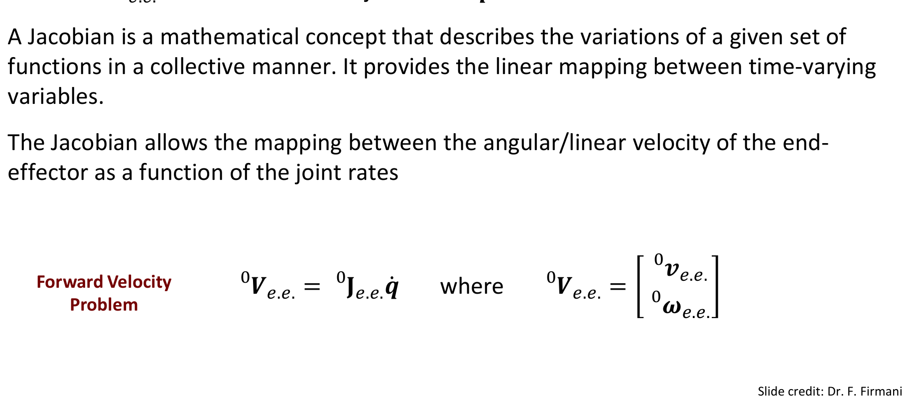
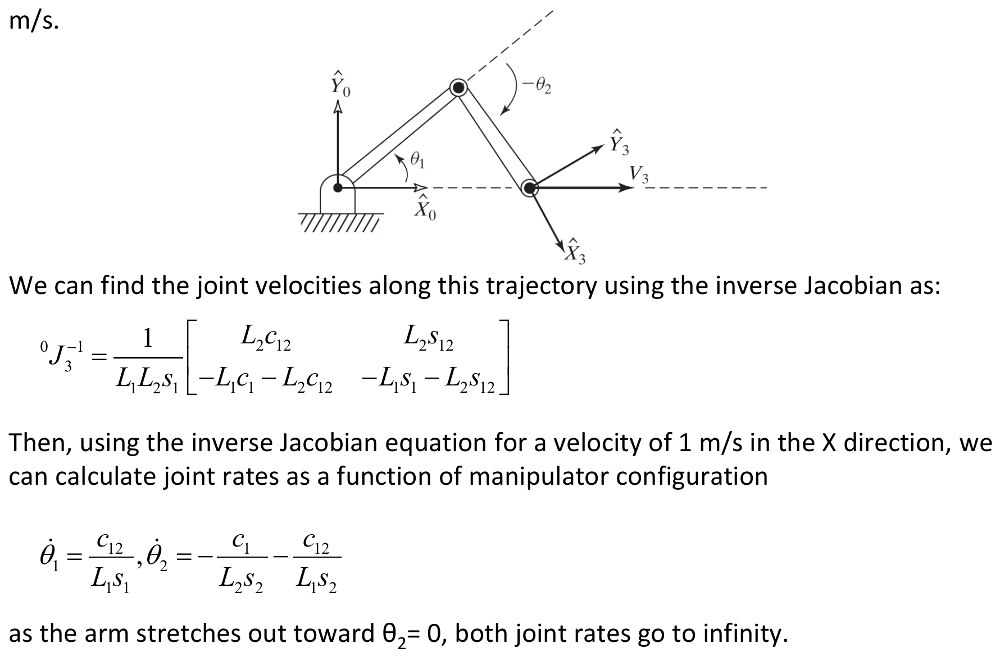
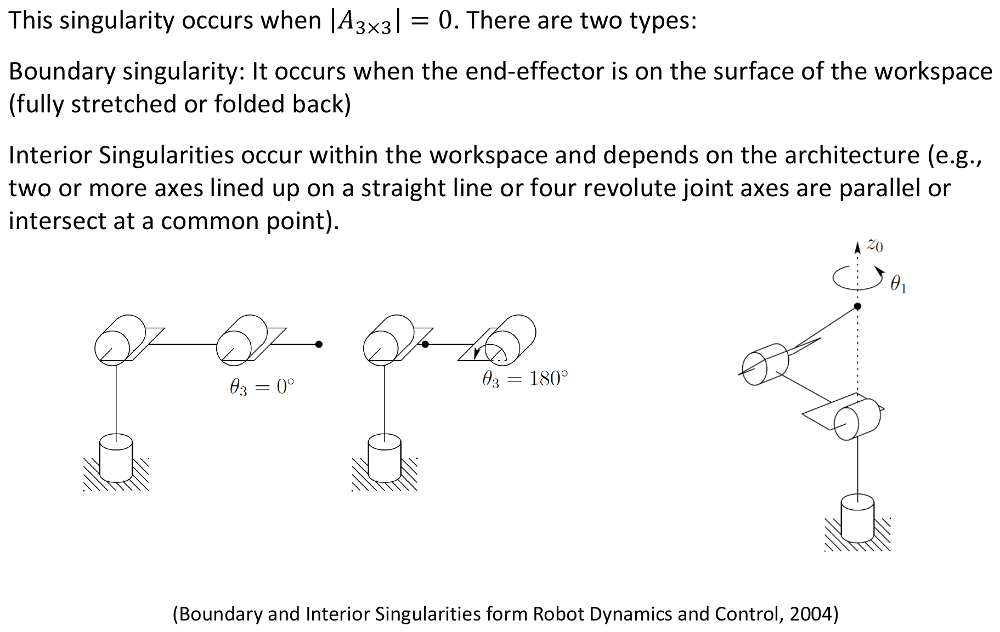
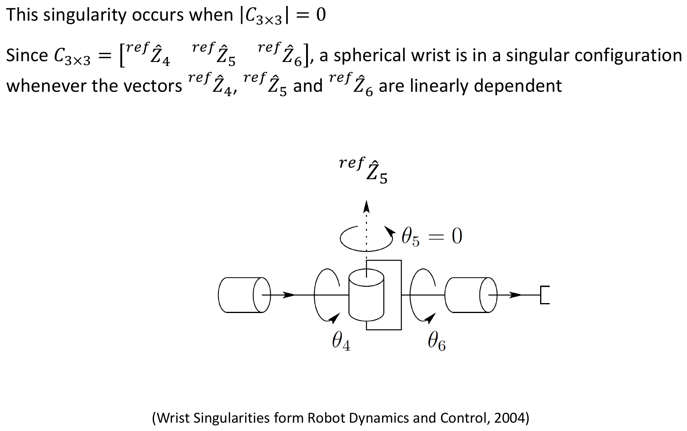
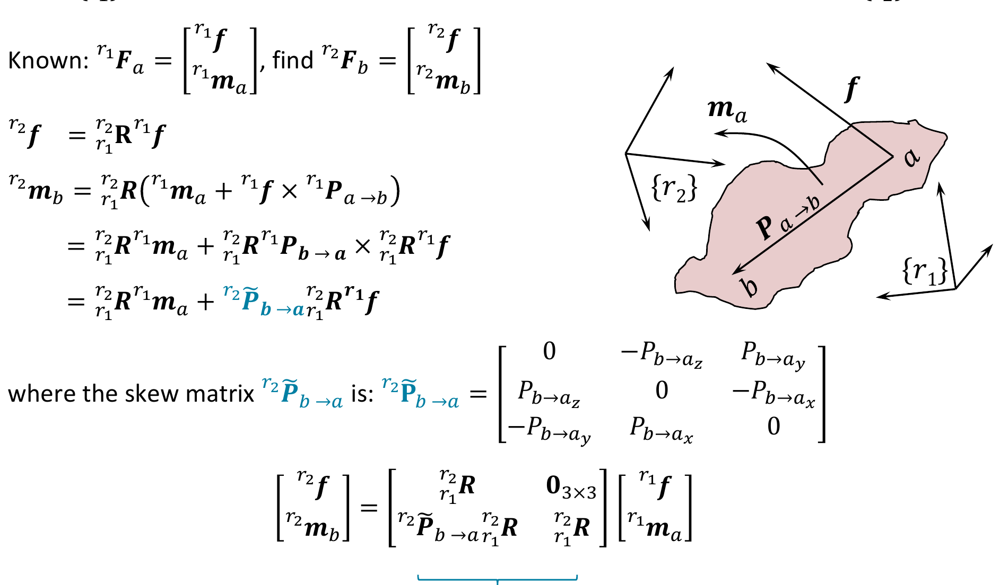

Ch 5: Jacobians, Velocities & Static Forces PDF p.1
Overview PDF p.2
This chapter covers two methods for analyzing velocities and static forces:
- Velocity analysis of rigid bodies and velocity propagation
- Forward velocity problem and Jacobian
- Joint directions and derivatives
- Joint directions and cross products
- Velocity transformation matrix and simpler Jacobians
- Inverse velocity problem and singularities
- Force transformation matrices and inverse static problem
5.1 Introduction PDF p.3
This chapter examines the notions of linear and angular velocities of rigid bodies. The notion of differentiation of position vectors and rotation matrices will be used to define the velocity terms for general motion (i.e., a motion that includes both translation and rotation).
A systematic analysis of the velocities of the links of a manipulator will be conducted from the base to the end-effector (velocity propagation).
The study of both velocities and the static forces acting on a rigid body leads to a matrix entity called the JacobianIn robotics, the Jacobian is a matrix that linearly maps joint velocities to end-effector (task-space) velocities. It is configuration-dependent and encodes how each joint contributes to end-effector motion at a given instant.Craig, Introduction to Robotics, §5.6–5.7.
The Jacobian is one of the most important tools in robotics — it is the mathematical bridge between what the joints are doing (joint velocities) and what the end-effector is doing (Cartesian velocities).
Recommended video: Modern Robotics, Chapter 5: Velocity Kinematics and Statics by Kevin Lynch (Northwestern University). This video series introduces the Jacobian, explains how it maps joint velocities to end-effector velocities, and covers singularities, manipulability, and the force ellipsoid.
- Modern Robotics Chapter 5 — Velocity Kinematics and Statics
- Full chapter page with all sub-topic videos
Why watch this: The Modern Robotics treatment uses screw theory (twists), which is a different but complementary perspective to the Craig-style approach used in our course.
Think of the Jacobian as a "gear ratio" matrix for a robot. Just as a gear ratio tells you how fast an output shaft spins given an input shaft speed, the Jacobian tells you how fast the end-effector moves given a set of joint velocities.
Key intuitions:
- The Jacobian is configuration-dependent. Unlike a fixed gear ratio, the Jacobian changes as the robot moves.
- Each column of the Jacobian represents one joint's contribution. Column $i$ tells you: "If joint $i$ moves at unit speed and all other joints are stationary, what velocity does the end-effector experience?"
- The Jacobian is a $6 \times n$ matrix (for a robot with $n$ joints in 3D space), where the top 3 rows correspond to linear velocity and the bottom 3 rows correspond to angular velocity.
- The Jacobian connects two "spaces." Joint space is $n$-dimensional. Task space is 6-dimensional (3 translations + 3 rotations). The Jacobian is the linear map between them at any given instant.
Reference: Robot Control Part 2: Jacobians, Velocity, and Force — StudyWolf
5.2 Notation
5.2.1 Differentiation of Position Vector PDF p.4
Derivative of a position vector: The derivative of position vector $\boldsymbol{Q}$ with respect to frame $\{B\}$ is:
$$\frac{d}{dt} {}^{B}\boldsymbol{Q} = {}^{B}\boldsymbol{V}_Q$$Velocity in another reference frame:
$${}^{A}\!\left({}^{B}\boldsymbol{V}_Q\right) = \frac{{}^{A}d}{dt} {}^{B}\boldsymbol{Q}$$Shorthand when frames match:
$${}^{B}\!\left({}^{B}\boldsymbol{V}_Q\right) = {}^{B}\boldsymbol{V}_Q$$Frame change via rotation matrix:
$${}^{A}\!\left({}^{B}\boldsymbol{V}_Q\right) = {}^{A}_{B}\boldsymbol{R}\; {}^{B}\boldsymbol{V}_Q$$Velocity of a frame origin:
$$\boldsymbol{v}_C = {}^{U}\boldsymbol{V}_{C_{ORG}}$$5.2.2 Worked Example: Train and Car PDF p.5
Setup: A fixed universe frame $\{U\}$, a frame attached to a train traveling at 100 mph $\{T\}$, and a frame attached to a car traveling at 30 mph $\{C\}$. Both vehicles heading in the $\hat{Y}$ direction of $\{U\}$.
Given: The rotation matrices ${}^{U}_{T}\boldsymbol{R}$ and ${}^{U}_{C}\boldsymbol{R}$ are known and constant.
Find $\frac{{}^{U}d}{dt} {}^{U}\boldsymbol{P}_{C_{ORG}}$:
$$\frac{{}^{U}d}{dt} {}^{U}\boldsymbol{P}_{C_{ORG}} = {}^{U}\boldsymbol{V}_{C_{ORG}} = \boldsymbol{v}_C = 30\,\hat{Y}$$Find ${}^{C}\!\left({}^{U}\boldsymbol{V}_{T_{ORG}}\right)$:
$${}^{C}\!\left({}^{U}\boldsymbol{V}_{T_{ORG}}\right) = {}^{C}\boldsymbol{v}_T = {}^{U}_{C}\boldsymbol{R}\;\boldsymbol{v}_T = {}^{U}_{C}\boldsymbol{R}\;100\hat{Y} = {}^{U}_{C}\boldsymbol{R}^{-1}\;100\hat{Y}$$Find ${}^{C}\!\left({}^{T}\boldsymbol{V}_{C_{ORG}}\right)$:
$${}^{C}\!\left({}^{T}\boldsymbol{V}_{C_{ORG}}\right) = {}^{C}_{T}\boldsymbol{R}\; {}^{T}\boldsymbol{V}_{C_{ORG}} = -{}^{U}_{C}\boldsymbol{R}^{-1}\;{}^{U}_{T}\boldsymbol{R}\;70\hat{Y}$$Note: The relative velocity of the car w.r.t. the train is $30 - 100 = -70$ mph in the $\hat{Y}$ direction of $\{U\}$.
5.2.3 The Angular Velocity Vector PDF p.6
The angular velocityA vector quantity describing how fast and about which axis a rigid body is rotating. In 3D, angular velocity has three components. Unlike linear velocity, it does not depend on a reference point on the body — every point on a rigid body shares the same angular velocity.Craig, Introduction to Robotics, §5.2; Wikipedia — Angular velocity of frame $\{B\}$ relative to frame $\{A\}$ is the vector ${}^{A}\boldsymbol{\Omega}_B$.
Simplified notation for angular velocity relative to understood reference $\{U\}$:
$$\boldsymbol{\omega}_C = {}^{U}\boldsymbol{\Omega}_C$$
5.3 Linear and Rotational Velocity of Rigid Bodies
5.3.1 Linear VelocityThe rate of change of a point's position in space, measured in metres per second. Unlike angular velocity, linear velocity depends on which point on a rigid body you are tracking. For a robot link, linear velocity typically refers to the velocity of the link frame's origin.Craig, Introduction to Robotics, §5.3 PDF p.7

The absolute velocity of point $Q$ with respect to frame $\{A\}$ is found by differentiating:
$$\frac{d\;{}^{A}\boldsymbol{Q}}{dt} = \frac{d\;{}^{A}\boldsymbol{P}_{B_{ORG}}}{dt} + \frac{d\;{}^{A}_{B}\boldsymbol{R}\;{}^{B}\boldsymbol{Q}}{dt}$$5.3.2 Constant Orientation Case PDF p.8
If the orientation of frame $\{B\}$ relative to $\{A\}$ does not change (${}^{A}_{B}\boldsymbol{R}$ constant):
$$\frac{d\;{}^{A}\boldsymbol{Q}}{dt} = \frac{d\;{}^{A}\boldsymbol{P}_{B_{ORG}}}{dt} + {}^{A}_{B}\boldsymbol{R}\;\frac{d\;{}^{B}\boldsymbol{Q}}{dt}$$5.3.3 Rotational Velocity PDF p.9

Position mapping: ${}^{A}\boldsymbol{Q} = {}^{A}_{B}\boldsymbol{R}\;{}^{B}\boldsymbol{Q}$
5.3.4 General Velocity Representation PDF p.10
This is the fundamental velocity equation combining:
- ${}^{A}\boldsymbol{V}_{B_{ORG}}$: linear velocity of the origin of $\{B\}$ in $\{A\}$
- ${}^{A}_{B}\boldsymbol{R}\;{}^{B}\boldsymbol{V}_Q$: velocity of $Q$ relative to $\{B\}$, expressed in $\{A\}$
- ${}^{A}\boldsymbol{\Omega}_B \times {}^{A}_{B}\boldsymbol{R}\;{}^{B}\boldsymbol{Q}$: velocity due to rotation of $\{B\}$ relative to $\{A\}$
5.5 Convention — Motion of the Links of a Robot PDF p.11
- Link frame $\{0\}$ is used as the reference frame
- $v_i$ is the linear velocity of the origin of link frame $\{i\}$
- $\omega_i$ is the angular velocity of link frame $\{i\}$
5.6 Velocity Propagation from Link to Link PDF p.12
Concept: The velocity of each joint (joint rate) contributes to the linear and angular velocity of the links. The velocity of the links is a function of all the joint rates that precede the link — this is velocity propagation.
The linear and angular velocity of link $i+1$ can be described as the velocity of link $i$ plus the contribution of joint $i+1$.
Velocity propagation is a recursive algorithm: you start at the base (where everything is zero) and "propagate" velocities outward, link by link.
Recommended resources:
- Robot Academy — Velocity of a 2-Joint Planar Robot Arm
- Robot Academy — Velocity of a 3-Joint Planar Robot Arm
- Mecharithm — Velocities in Robotics
Why this matters: Velocity propagation is NOT just a derivation technique — it is the actual algorithm used in real-time robot controllers (Newton-Euler inverse dynamics in Chapter 6 will build directly on this).
The "snowball" analogy: Imagine rolling a snowball downhill. As it moves from link to link, it picks up more "velocity" from each joint it passes through.
For a revolute joint, the key equations are:
- Angular velocity: ${}^{i+1}\boldsymbol{\omega}_{i+1} = {}^{i+1}_{i}\boldsymbol{R}\;{}^{i}\boldsymbol{\omega}_i + \dot{\theta}_{i+1}\;{}^{i+1}\hat{Z}_{i+1}$
"Take the angular velocity of the previous link, rotate it into the current link's frame, and add the new joint's rotation." - Linear velocity: ${}^{i+1}\boldsymbol{v}_{i+1} = {}^{i+1}_{i}\boldsymbol{R}({}^{i}\boldsymbol{v}_i + {}^{i}\boldsymbol{\omega}_i \times {}^{i}\boldsymbol{P}_{i+1})$
"Take the linear velocity of the previous link, add the tangential velocity caused by the previous link's rotation, then rotate the whole thing."
The cross product $\boldsymbol{\omega}_i \times \boldsymbol{P}_{i+1}$ is the tangential velocity due to rotation — like swinging a ball on a string.
5.6.1 Revolute Joints PDF p.13
Angular velocity of link $i+1$ (in frame $\{i+1\}$):
$$\boxed{{}^{i+1}\boldsymbol{\omega}_{i+1} = {}^{i+1}_{i}\boldsymbol{R}\;{}^{i}\boldsymbol{\omega}_i + \dot{\theta}_{i+1}\;{}^{i+1}\hat{Z}_{i+1}}$$where $\dot{\theta}_{i+1}\;{}^{i+1}\hat{Z}_{i+1} = \begin{bmatrix} 0 \\ 0 \\ \dot{\theta}_{i+1} \end{bmatrix}$
Linear velocity of frame $\{i+1\}$: PDF p.14
$$\boxed{{}^{i+1}\boldsymbol{v}_{i+1} = {}^{i+1}_{i}\boldsymbol{R}\left({}^{i}\boldsymbol{v}_i + {}^{i}\boldsymbol{\omega}_i \times {}^{i}\boldsymbol{P}_{i+1}\right)}$$5.6.2 Prismatic Joints PDF p.15
Angular velocity (no contribution from prismatic joint):
$$\boxed{{}^{i+1}\boldsymbol{\omega}_{i+1} = {}^{i+1}_{i}\boldsymbol{R}\;{}^{i}\boldsymbol{\omega}_i}$$Linear velocity:
$$\boxed{{}^{i+1}\boldsymbol{v}_{i+1} = {}^{i+1}_{i}\boldsymbol{R}\left({}^{i}\boldsymbol{v}_i + {}^{i}\boldsymbol{\omega}_i \times {}^{i}\boldsymbol{P}_{i+1}\right) + \dot{d}_{i+1}\;{}^{i+1}\hat{Z}_{i+1}}$$
5.6.3 Worked Example: Two-Link Planar Manipulator — Velocity Propagation PDF p.16
Problem: A two-link manipulator with revolute joints, link lengths $L_1$ and $L_2$. Calculate the velocity of the tip of the arm as a function of joint rates. Give the answer in terms of frame $\{3\}$ and frame $\{0\}$.

Homogeneous transforms:
$${}^{0}_{1}\boldsymbol{T} = \begin{bmatrix} c_1 & -s_1 & 0 & 0 \\ s_1 & c_1 & 0 & 0 \\ 0 & 0 & 1 & 0 \\ 0 & 0 & 0 & 1 \end{bmatrix}, \quad {}^{1}_{2}\boldsymbol{T} = \begin{bmatrix} c_2 & -s_2 & 0 & L_1 \\ s_2 & c_2 & 0 & 0 \\ 0 & 0 & 1 & 0 \\ 0 & 0 & 0 & 1 \end{bmatrix}, \quad {}^{2}_{3}\boldsymbol{T} = \begin{bmatrix} 1 & 0 & 0 & L_2 \\ 0 & 1 & 0 & 0 \\ 0 & 0 & 1 & 0 \\ 0 & 0 & 0 & 1 \end{bmatrix}$$Note: ${}^{0}\boldsymbol{\omega}_0 = \boldsymbol{0}$ and ${}^{0}\boldsymbol{v}_0 = \boldsymbol{0}$ (base frame is fixed). Also ${}^{0}\boldsymbol{P}_1 = \boldsymbol{0}$ since $\{1\}$ and $\{0\}$ share the same origin.
Computing ${}^{1}\boldsymbol{\omega}_1 \times {}^{1}\boldsymbol{P}_2$:
$${}^{1}\boldsymbol{\omega}_1 \times {}^{1}\boldsymbol{P}_2 = \begin{bmatrix} 0 \\ 0 \\ \dot{\theta}_1 \end{bmatrix} \times \begin{bmatrix} L_1 \\ 0 \\ 0 \end{bmatrix} = \begin{bmatrix} 0 \\ L_1\dot{\theta}_1 \\ 0 \end{bmatrix}$$ $${}^{2}\boldsymbol{v}_2 = \begin{bmatrix} c_2 & s_2 & 0 \\ -s_2 & c_2 & 0 \\ 0 & 0 & 1 \end{bmatrix} \begin{bmatrix} 0 \\ L_1\dot{\theta}_1 \\ 0 \end{bmatrix} = \begin{bmatrix} L_1 s_2 \dot{\theta}_1 \\ L_1 c_2 \dot{\theta}_1 \\ 0 \end{bmatrix}$$Note: There is no joint 3; frame $\{3\}$ is a tool frame, so $\dot{\theta}_3 = 0$.
Computing ${}^{2}\boldsymbol{\omega}_2 \times {}^{2}\boldsymbol{P}_3$:
$${}^{2}\boldsymbol{\omega}_2 \times {}^{2}\boldsymbol{P}_3 = \begin{bmatrix} 0 \\ 0 \\ \dot{\theta}_1 + \dot{\theta}_2 \end{bmatrix} \times \begin{bmatrix} L_2 \\ 0 \\ 0 \end{bmatrix} = \begin{bmatrix} 0 \\ L_2(\dot{\theta}_1 + \dot{\theta}_2) \\ 0 \end{bmatrix}$$ $${}^{3}\boldsymbol{v}_3 = \begin{bmatrix} L_1 s_2 \dot{\theta}_1 \\ L_1 c_2 \dot{\theta}_1 + L_2(\dot{\theta}_1 + \dot{\theta}_2) \\ 0 \end{bmatrix}$$In velocity propagation from link $i$ to link $i+1$ for a revolute joint, the angular velocity of link $i+1$ is:
5.7 Jacobians and the Forward Velocity Problem
5.7.1 Definition and Forward Velocity Problem PDF p.19
The Forward Velocity Problem determines the velocity (linear and angular) of the end-effector ${}^{0}\boldsymbol{V}_{e.e.}$ as a function of the joint rates $\dot{\boldsymbol{q}}$.
A Jacobian provides the linear mapping between time-varying variables:
$$\boxed{{}^{0}\boldsymbol{V}_{e.e.} = {}^{0}\boldsymbol{J}_{e.e.}\;\dot{\boldsymbol{q}}}$$where:
$${}^{0}\boldsymbol{V}_{e.e.} = \begin{bmatrix} {}^{0}\boldsymbol{v}_{e.e.} \\ {}^{0}\boldsymbol{\omega}_{e.e.} \end{bmatrix}$$
The end-effector position is a nonlinear function of the joint variables: $\boldsymbol{x} = f(\boldsymbol{q})$. Differentiating both sides with respect to time gives $\dot{\boldsymbol{x}} = \frac{\partial f}{\partial \boldsymbol{q}}\,\dot{\boldsymbol{q}}$. The matrix of partial derivatives $\frac{\partial f}{\partial \boldsymbol{q}}$ is exactly the Jacobian $\boldsymbol{J}(\boldsymbol{q})$.
This is a first-order (linear) approximation that is exact at each instant. It works because any smooth nonlinear function looks linear over infinitesimally small changes — this is the fundamental idea behind the total derivative from multivariable calculus.
Each column $j$ of $\boldsymbol{J}$ represents the end-effector velocity that would result from joint $j$ moving at unit speed with all other joints frozen. The full end-effector velocity is the superposition (sum) of all columns weighted by their respective joint rates.
5.7.2 Jacobian from the Two-Link Example PDF p.20
With respect to frame $\{0\}$ (linear velocity only):
$${}^{0}\boldsymbol{v}_3 = \underbrace{\begin{bmatrix} -L_1 s_1 - L_2 s_{12} & -L_2 s_{12} \\ L_1 c_1 + L_2 c_{12} & L_2 c_{12} \end{bmatrix}}_{{}^{0}\boldsymbol{J}_3 \;(2\times 2)} \begin{bmatrix} \dot{\theta}_1 \\ \dot{\theta}_2 \end{bmatrix}$$With respect to frame $\{3\}$ (linear velocity only):
$${}^{3}\boldsymbol{v}_3 = \underbrace{\begin{bmatrix} L_1 s_2 & 0 \\ L_1 c_2 + L_2 & L_2 \end{bmatrix}}_{{}^{3}\boldsymbol{J}_3 \;(2\times 2)} \begin{bmatrix} \dot{\theta}_1 \\ \dot{\theta}_2 \end{bmatrix}$$CONFIRMED TYPO IN ORIGINAL SLIDES (CORRECTED HERE): On slide 20 of the original PDF (page 20), the expression for ${}^{3}\boldsymbol{v}_3$ contains $L_2 s_2$ in the (1,1) entry of the Jacobian. Tracing through the velocity propagation derivation, the x-component of ${}^{3}\boldsymbol{v}_3$ is $L_1 s_2 \dot{\theta}_1$ (not $L_2 s_2 \dot{\theta}_1$), making the correct (1,1) entry of ${}^{3}\boldsymbol{J}_3$ equal to $L_1 s_2$.
Verification: From the velocity propagation result on page 17: ${}^{3}\boldsymbol{v}_3 = \begin{bmatrix} L_1 s_2 \dot{\theta}_1 \\ L_1 c_2 \dot{\theta}_1 + L_2(\dot{\theta}_1 + \dot{\theta}_2) \\ 0 \end{bmatrix}$. The first component is clearly $L_1 s_2 \dot{\theta}_1$.
Including angular velocity (with respect to frame $\{0\}$):
$$\begin{bmatrix} {}^{0}\boldsymbol{v}_3 \\ {}^{0}\omega_{z_3} \end{bmatrix} = \underbrace{\begin{bmatrix} -L_1 s_1 - L_2 s_{12} & -L_2 s_{12} \\ L_1 c_1 + L_2 c_{12} & L_2 c_{12} \\ 1 & 1 \end{bmatrix}}_{{}^{0}\boldsymbol{J}_3 \;(3\times 2)} \begin{bmatrix} \dot{\theta}_1 \\ \dot{\theta}_2 \end{bmatrix}$$Including angular velocity (with respect to frame $\{3\}$):
$$\begin{bmatrix} {}^{3}\boldsymbol{v}_3 \\ {}^{3}\omega_{z_3} \end{bmatrix} = \underbrace{\begin{bmatrix} L_1 s_2 & 0 \\ L_1 c_2 + L_2 & L_2 \\ 1 & 1 \end{bmatrix}}_{{}^{3}\boldsymbol{J}_3 \;(3\times 2)} \begin{bmatrix} \dot{\theta}_1 \\ \dot{\theta}_2 \end{bmatrix}$$5.7.3 Two Methods for Determining the Jacobian PDF p.21
The Jacobian can be determined using two methods:
- Joint Directions and Derivatives
- Joint Directions and Cross Products
Both methods produce the same Jacobian — they are mathematically equivalent. The difference is purely practical:
| Aspect | Method 1: Derivatives | Method 2: Cross Products |
|---|---|---|
| What you need | Forward kinematics ${}^{0}\boldsymbol{P}_{ee}(\boldsymbol{q})$ in closed form | Homogeneous transforms ${}^{0}_{i}\boldsymbol{T}$ for each joint |
| Linear velocity columns | $\frac{\partial {}^{0}\boldsymbol{P}_{ee}}{\partial q_i}$ | ${}^{0}\hat{Z}_i \times {}^{0}\boldsymbol{P}_{i \to ee}$ |
| Angular velocity columns | ${}^{0}\hat{Z}_i$ (revolute) or $\boldsymbol{0}$ (prismatic) | Same |
| Best for | Simple robots where FK is easy to differentiate | Any robot, especially with DH transforms already computed |
| Drawback | Differentiation can be tedious for complex FK | Requires computing position vectors between joints |
Rule of thumb: For exam problems and simple planar robots, the derivatives method is often faster. For 6-DOF industrial robots with DH parameters, the cross-product method is more systematic.
5.7.4 Method 1: Joint Directions and Derivatives PDF p.22
Linear velocity of the end-effector:
$${}^{0}\boldsymbol{v}_{e.e.} = \sum_{i=1}^{n} \frac{\partial\;{}^{0}\boldsymbol{P}_{ee}}{\partial q_i}\;\dot{q}_i$$Angular velocity of the end-effector:
$${}^{0}\boldsymbol{\omega}_{e.e.} = \sum_{i=1}^{n} \dot{\theta}_i\;{}^{0}\hat{Z}_i$$Jacobian structure: PDF p.23
$${}^{0}\boldsymbol{J}_{e.e.} = \begin{bmatrix} \cdots & \dfrac{\partial\;{}^{0}\boldsymbol{P}_{ee}}{\partial \theta_i} & \cdots & \dfrac{\partial\;{}^{0}\boldsymbol{P}_{ee}}{\partial d_j} & \cdots \\[10pt] \cdots & {}^{0}\hat{Z}_i & \cdots & \boldsymbol{0}_{3\times 1} & \cdots \end{bmatrix}$$Top row = Linear Velocity. Bottom row = Angular Velocity. Left columns = Revolute joints. Right columns = Prismatic joints.
Key points:
- The joint direction ${}^{0}\hat{Z}_i$ can be obtained by extracting the third column of ${}^{0}_{i}\boldsymbol{T}$.
- The position vector ${}^{0}\boldsymbol{P}_{ee}$ is extracted from the last column of ${}^{0}_{ee}\boldsymbol{T}$.
5.7.5 Worked Example: Jacobian via Derivatives (Two-Link) PDF p.24
Apply Method 1 to the two-link planar manipulator.
Jacobian structure:
$${}^{0}\boldsymbol{J}_3 = \begin{bmatrix} \dfrac{\partial\;{}^{0}\boldsymbol{P}_3}{\partial \theta_1} & \dfrac{\partial\;{}^{0}\boldsymbol{P}_3}{\partial \theta_2} \\[10pt] {}^{0}\hat{Z}_1 & {}^{0}\hat{Z}_2 \end{bmatrix}$$5.7.6 Method 2: Joint Directions and Cross Products PDF p.26
Revolute Joint $i$:
- Angular velocity contribution: ${}^{ref}\boldsymbol{\omega}_i = \dot{\theta}_i\;{}^{ref}\hat{Z}_i$
- Linear velocity contribution: ${}^{ref}\boldsymbol{v}_i = \dot{\theta}_i\;{}^{ref}\hat{Z}_i \times {}^{ref}\boldsymbol{P}_{i \to ee}$
Prismatic Joint $j$: PDF p.27
- Angular velocity contribution: ${}^{ref}\boldsymbol{\omega}_j = \boldsymbol{0}_{3\times 1}$
- Linear velocity contribution: ${}^{ref}\boldsymbol{v}_j = \dot{d}_j\;{}^{ref}\hat{Z}_j$
Jacobian structure (with $ref = \{0\}$): PDF p.28
$${}^{0}\boldsymbol{J}_{e.e.} = \begin{bmatrix} \cdots & {}^{0}\hat{Z}_i \times {}^{0}\boldsymbol{P}_{i\to ee} & \cdots & {}^{0}\hat{Z}_j & \cdots \\[6pt] \cdots & {}^{0}\hat{Z}_i & \cdots & \boldsymbol{0}_{3\times 1} & \cdots \end{bmatrix}$$Top row = Linear Velocity. Bottom row = Angular Velocity. Left columns = Revolute joints. Right columns = Prismatic joints.
Position difference: ${}^{0}\boldsymbol{P}_{i\to ee} = {}^{0}\boldsymbol{P}_{ee} - {}^{0}\boldsymbol{P}_i$
5.7.7 Worked Example: Jacobian via Cross Products (Two-Link) PDF p.29
Apply Method 2 to the two-link planar manipulator.
Jacobian structure:
$${}^{0}\boldsymbol{J}_3 = \begin{bmatrix} {}^{0}\hat{Z}_1 \times {}^{0}\boldsymbol{P}_{1\to 3} & {}^{0}\hat{Z}_2 \times {}^{0}\boldsymbol{P}_{2\to 3} \\ {}^{0}\hat{Z}_1 & {}^{0}\hat{Z}_2 \end{bmatrix}$$Both methods produce the same Jacobian, confirming the result.
Angela Sodemann's RoboGrok robotics course includes clear, step-by-step video lectures on computing the Jacobian matrix.
The Jacobian matrix $J$ relates joint velocities $\dot{\theta}$ to end-effector velocity $v$ as:
5.7.8 Jacobian Remarks — Wrist Jacobian PDF p.32
Finding the Jacobian of a point at the tip of the end-effector can be tedious. Determining singularities involves computing the determinant of a $6 \times 6$ matrix. As an alternative, determine the Jacobian with respect to the wrist, ${}^{0}\boldsymbol{J}_w$:
$${}^{0}\boldsymbol{V}_w = {}^{0}\boldsymbol{J}_w\;\dot{\boldsymbol{q}}$$The wrist Jacobian has block structure:
$${}^{0}\boldsymbol{J}_w = \begin{bmatrix} A_{3\times 3} & \boldsymbol{0}_{3\times 3} \\ B_{3\times 3} & C_{3\times 3} \end{bmatrix}$$Resulting in a much simpler determinant:
$$|{}^{0}\boldsymbol{J}_w| = |A_{3\times 3}|\;|C_{3\times 3}|$$5.7.9 Velocity Transformation $TV_{b\to a}$ (Same Reference Frame) PDF p.33
For two points $a$ and $b$ on the same rigid body, with velocity of $a$ known in frame $\{r_1\}$:
$${}^{r_1}\boldsymbol{v}_b = {}^{r_1}\boldsymbol{v}_a + {}^{r_1}\hat{\boldsymbol{P}}_{b\to a}\;{}^{r_1}\boldsymbol{\omega}$$where ${}^{r_1}\hat{\boldsymbol{P}}_{b\to a}$ is the skew-symmetric matrix of the position vector:
$${}^{r_1}\hat{\boldsymbol{P}}_{b\to a} = \begin{bmatrix} 0 & -P_{b\to a_z} & P_{b\to a_y} \\ P_{b\to a_z} & 0 & -P_{b\to a_x} \\ -P_{b\to a_y} & P_{b\to a_x} & 0 \end{bmatrix}$$Matrix form:
$$\boxed{\begin{bmatrix} {}^{r_1}\boldsymbol{v}_b \\ {}^{r_1}\boldsymbol{\omega} \end{bmatrix} = \underbrace{\begin{bmatrix} \boldsymbol{I}_{3\times 3} & {}^{r_1}\hat{\boldsymbol{P}}_{b\to a} \\ \boldsymbol{0}_{3\times 3} & \boldsymbol{I}_{3\times 3} \end{bmatrix}}_{TV_{b\to a}} \begin{bmatrix} {}^{r_1}\boldsymbol{v}_a \\ {}^{r_1}\boldsymbol{\omega} \end{bmatrix}}$$Note: The angular velocity ${}^{r_1}\boldsymbol{\omega}$ is the same for both points since they are on the same rigid body.
5.7.10 Velocity Transformation $TV_{ee\to w}$ — Wrist to End-Effector PDF p.34
5.7.11 Wrist Jacobian Formulas (${}^{0}\boldsymbol{J}_w$) PDF p.35
Joint Directions and Derivatives:
$${}^{0}\boldsymbol{J}_w = \begin{bmatrix} \cdots & \dfrac{\partial\;{}^{0}\boldsymbol{P}_w}{\partial \theta_i} & \cdots & \dfrac{\partial\;{}^{0}\boldsymbol{P}_w}{\partial d_j} & \cdots \\[10pt] \cdots & {}^{0}\hat{Z}_i & \cdots & \boldsymbol{0}_{3\times 1} & \cdots \end{bmatrix}$$Joint Directions and Cross Products:
$${}^{0}\boldsymbol{J}_w = \begin{bmatrix} \cdots & {}^{0}\hat{Z}_i \times {}^{0}\boldsymbol{P}_{i\to w} & \cdots & {}^{0}\hat{Z}_j & \cdots \\[6pt] \cdots & {}^{0}\hat{Z}_i & \cdots & \boldsymbol{0}_{3\times 1} & \cdots \end{bmatrix}$$5.7.12 Full Forward Velocity via Wrist Jacobian PDF p.36
The evaluation of ${}^{0}\boldsymbol{J}_w$ is much easier than finding ${}^{0}\boldsymbol{J}_{ee}$, and singularity analysis is simpler due to the block-triangular structure.
5.7.13 Velocity Transformation ${}^{r_2}_{r_1}TV_{b\to a}$ (Different Reference Frames) PDF p.37
For two points $a$ and $b$ on the same rigid body, velocity of $a$ known in $\{r_1\}$, find velocity of $b$ in $\{r_2\}$:
$$\boxed{\begin{bmatrix} {}^{r_2}\boldsymbol{v}_b \\ {}^{r_2}\boldsymbol{\omega} \end{bmatrix} = \underbrace{\begin{bmatrix} {}^{r_2}_{r_1}\boldsymbol{R} & {}^{r_2}\hat{\boldsymbol{P}}_{b\to a}\;{}^{r_2}_{r_1}\boldsymbol{R} \\ \boldsymbol{0}_{3\times 3} & {}^{r_2}_{r_1}\boldsymbol{R} \end{bmatrix}}_{{}^{r_2}_{r_1}TV_{b\to a}} \begin{bmatrix} {}^{r_1}\boldsymbol{v}_a \\ {}^{r_1}\boldsymbol{\omega} \end{bmatrix}}$$5.7.14 Velocity Transformation ${}^{0}_{ref}TV_{ee\to w}$ — General Frame Change PDF p.38
5.7.15 Jacobian ${}^{ref}\boldsymbol{J}_w$ — Cross-Product Method PDF p.39
To determine the Jacobian based on a point coincident with the wrist and oriented w.r.t. any reference frame, use the cross-product method:
$${}^{ref}\boldsymbol{J}_w = \begin{bmatrix} \cdots & {}^{ref}\hat{Z}_i \times {}^{ref}\boldsymbol{P}_{i\to w} & \cdots & {}^{ref}\hat{Z}_j & \cdots \\[6pt] \cdots & {}^{ref}\hat{Z}_i & \cdots & \boldsymbol{0}_{3\times 1} & \cdots \end{bmatrix}$$Key points:
- ${}^{ref}\hat{Z}_i$: third column of ${}^{ref}_{i}\boldsymbol{T}$
- ${}^{ref}\boldsymbol{P}_{i\to w} = {}^{ref}_{i}\boldsymbol{R}\;{}^{i}\boldsymbol{P}_{i\to w}$
5.7.16 Inverse Velocity Problem PDF p.40
The inverse velocity problem: ${}^{0}\boldsymbol{V}_{ee}$ is known and $\dot{\boldsymbol{q}}$ is unknown.
Step 1: Invert the velocity transformation matrix:
$${}^{ref}\boldsymbol{V}_w = \left({}^{0}_{ref}TV_{ee\to w}\right)^{-1}\;{}^{0}\boldsymbol{V}_{ee} = {}^{ref}_{0}TV_{w\to ee}\;{}^{0}\boldsymbol{V}_{ee}$$Step 2: Find $\dot{\boldsymbol{q}}$ by inverting the Jacobian:
The inverse of the block-triangular Jacobian is:
$$\left({}^{ref}\boldsymbol{J}_w\right)^{-1} = \begin{bmatrix} A^{-1} & \boldsymbol{0}_{3\times 3} \\ -C^{-1}BA^{-1} & C^{-1} \end{bmatrix}$$5.8 Singularities PDF p.41
SingularitiesConfigurations where the Jacobian matrix loses rank (its determinant becomes zero). At a singularity, the robot cannot generate end-effector velocity in one or more directions regardless of joint velocities. Common examples: a fully extended arm (boundary singularity) and aligned wrist axes (wrist singularity).Craig, Introduction to Robotics, §5.8; Wikipedia — Singularity (robotics) occur when the Jacobian becomes singular (rank deficient). Physically, the manipulator loses one or more degrees of freedom (DoF) — it cannot move in some directions no matter what joint rates are selected.
At singular points, the inverse Jacobian blows up — joint rates approach infinity as the singularity is approached.
In singular configurations, applying the inverse Jacobian in a robot control system is dangerous because $\boldsymbol{J}^{-1}$ becomes unbounded. This results in:
- Joint rates approaching infinity near singularities
- Real robots may jerk, vibrate, or trigger protective stops
- Controller may deviate from the planned path
Singularities are not merely a mathematical curiosity — they have direct, dangerous consequences on real robots:
1. Infinite joint velocities. Near a singularity, $\boldsymbol{J}^{-1}$ has entries that grow without bound. A controller using $\dot{\boldsymbol{q}} = \boldsymbol{J}^{-1}\boldsymbol{v}$ will command joint rates far exceeding motor limits, causing the robot to jerk violently or trigger an emergency stop.
2. Path tracking failure. Industrial robots following a straight-line Cartesian path (e.g., welding seams or painting) may pass through or near singularities. The robot cannot maintain the desired Cartesian speed and the path deviates, ruining the workpiece.
3. Loss of controllability. At the singularity itself, a degree of freedom vanishes — no combination of joint velocities can produce motion in the lost direction. This is physically observable: for example, when a 6-axis robot's wrist fully straightens ($\theta_5 = 0$), joints 4 and 6 become redundant with each other and the wrist can no longer yaw.
4. Industrial mitigation. Real controllers use strategies such as damped least-squares (DLS) inversion, singularity avoidance in path planners, and joint-limit checking to prevent catastrophic behavior near singularities.
Recommended resources:
- Mecademic — What Are Singularities in a Six-Axis Robot Arm?
- RoboDK — Robot Singularities: What Are They and How to Beat Them
- Robohub — 3 Types of Robot Singularities
What to look for: Wrist singularity (joints 4 & 6 align), shoulder singularity (wrist center above joint 1), elbow singularity (arm fully extended).
1. Loss of degrees of freedom. At a singularity, the end-effector cannot move in at least one Cartesian direction.
2. Infinite joint velocities required. As $\det(\boldsymbol{J}) \to 0$, some entries of $\boldsymbol{J}^{-1}$ go to infinity.
3. In practice, the controller saturates. Real robots have joint velocity limits. Exceeding them causes slowdowns, path deviations, or protective stops.
4. Two types from the factored determinant:
- Arm singularities ($|A| = 0$): Relate to the first 3 joints (positioning). Occur at workspace boundaries or interior alignments.
- Wrist singularities ($|C| = 0$): Relate to the last 3 joints (orienting). Occur when wrist axes align.
5.8.1 Worked Example: Singularity of Two-Link Manipulator PDF p.42
Problem: Consider the two-link manipulator with the end-effector moving along the X axis at 1.0 m/s. Find the joint velocities along this trajectory.

The inverse Jacobian (for the 2x2 linear velocity Jacobian):
$${}^{0}\boldsymbol{J}_3^{-1} = \frac{1}{L_1 L_2 s_2} \begin{bmatrix} L_2 c_{12} & L_2 s_{12} \\ -L_1 c_1 - L_2 c_{12} & -L_1 s_1 - L_2 s_{12} \end{bmatrix}$$For a velocity of 1 m/s in the X direction:
$$\dot{\theta}_1 = \frac{c_{12}}{L_1 s_2}, \quad \dot{\theta}_2 = -\frac{c_1}{L_2 s_2} - \frac{c_{12}}{L_1 s_2}$$As the arm stretches out toward $\theta_2 = 0$, both joint rates go to infinity (since $s_2 \to 0$ in the denominator). This is the classic boundary singularity — the arm is fully extended and cannot generate velocity in the radial direction.
5.8.2 Singularity Conditions PDF p.43
where $A_{3\times 3}$ is associated with the main arm (linear velocity) and $C_{3\times 3}$ is associated with the spherical wrist (angular velocity).
5.8.3 Main Arm Singularities PDF p.44
This singularity occurs when $|A_{3\times 3}| = 0$. Two types:
- Boundary singularity: End-effector on the surface of the workspace (fully stretched or folded back).
- Interior singularities: Within the workspace — two or more axes lined up, or four revolute joint axes parallel or intersecting at a common point.

5.8.4 Wrist Singularities PDF p.45
This singularity occurs when $|C_{3\times 3}| = 0$. Since:
$$C_{3\times 3} = \begin{bmatrix} {}^{ref}\hat{Z}_4 & {}^{ref}\hat{Z}_5 & {}^{ref}\hat{Z}_6 \end{bmatrix}$$A spherical wrist is singular whenever the vectors ${}^{ref}\hat{Z}_4$, ${}^{ref}\hat{Z}_5$, and ${}^{ref}\hat{Z}_6$ are linearly dependent.

Modern Robotics 5.3 — Singularities: Discusses how the Jacobian becomes rank-deficient and connects to the manipulability ellipsoid.
At a singularity of the Jacobian, which of the following is true?
5.9 Static Forces in Manipulators
5.9.1 Force Transformation ${}^{r_2}_{r_1}TF_{b\to a}$ PDF p.46

Known: ${}^{r_1}\boldsymbol{F}_a = \begin{bmatrix} {}^{r_1}\boldsymbol{f} \\ {}^{r_1}\boldsymbol{m}_a \end{bmatrix}$. Find: ${}^{r_2}\boldsymbol{F}_b = \begin{bmatrix} {}^{r_2}\boldsymbol{f} \\ {}^{r_2}\boldsymbol{m}_b \end{bmatrix}$
Derivation:
$${}^{r_2}\boldsymbol{f} = {}^{r_2}_{r_1}\boldsymbol{R}\;{}^{r_1}\boldsymbol{f}$$ $${}^{r_2}\boldsymbol{m}_b = {}^{r_2}_{r_1}\boldsymbol{R}\;{}^{r_1}\boldsymbol{m}_a + {}^{r_2}\hat{\boldsymbol{P}}_{b\to a}\;{}^{r_2}_{r_1}\boldsymbol{R}\;{}^{r_1}\boldsymbol{f}$$Matrix form:
$$\boxed{\begin{bmatrix} {}^{r_2}\boldsymbol{f} \\ {}^{r_2}\boldsymbol{m}_b \end{bmatrix} = \underbrace{\begin{bmatrix} {}^{r_2}_{r_1}\boldsymbol{R} & \boldsymbol{0}_{3\times 3} \\ {}^{r_2}\hat{\boldsymbol{P}}_{b\to a}\;{}^{r_2}_{r_1}\boldsymbol{R} & {}^{r_2}_{r_1}\boldsymbol{R} \end{bmatrix}}_{{}^{r_2}_{r_1}TF_{b\to a}} \begin{bmatrix} {}^{r_1}\boldsymbol{f} \\ {}^{r_1}\boldsymbol{m}_a \end{bmatrix}}$$Note: The force transformation has the skew-symmetric matrix in the lower-left block (affecting moment), while the velocity transformation has it in the upper-right block (affecting linear velocity). This is the duality between velocities and forces.
5.9.2 Inverse Static Force Problem PDF p.47
Solved from the conservation of power:
$$\boldsymbol{\tau}^\top \dot{\boldsymbol{q}} = {}^{0}\boldsymbol{F}_{ee}^\top\;{}^{0}\boldsymbol{V}_{ee}$$Since ${}^{0}\boldsymbol{V}_{ee} = {}^{0}\boldsymbol{J}_{ee}\;\dot{\boldsymbol{q}}$:
$$\boldsymbol{\tau}^\top \dot{\boldsymbol{q}} = {}^{0}\boldsymbol{F}_{ee}^\top\;{}^{0}\boldsymbol{J}_{ee}\;\dot{\boldsymbol{q}}$$True for all $\dot{\boldsymbol{q}}$, so $\boldsymbol{\tau}^\top = {}^{0}\boldsymbol{F}_{ee}^\top\;{}^{0}\boldsymbol{J}_{ee}$. Transposing:
Key insight: The transpose of the Jacobian maps end-effector forces/moments to joint torques, while the Jacobian itself maps joint velocities to end-effector velocities. This is the duality between velocity and force in robotics.
The relationship $\boldsymbol{\tau} = \boldsymbol{J}^\top \boldsymbol{F}$ comes from the principle of virtual work (conservation of power), not from algebraically inverting the velocity equation.
The derivation: In static equilibrium, the power generated at the joints equals the power delivered at the end-effector: $\boldsymbol{\tau}^\top \dot{\boldsymbol{q}} = \boldsymbol{F}^\top \boldsymbol{v}$. Substituting $\boldsymbol{v} = \boldsymbol{J}\dot{\boldsymbol{q}}$ gives $\boldsymbol{\tau}^\top \dot{\boldsymbol{q}} = \boldsymbol{F}^\top \boldsymbol{J}\dot{\boldsymbol{q}}$. Since this must hold for every possible $\dot{\boldsymbol{q}}$, we conclude $\boldsymbol{\tau}^\top = \boldsymbol{F}^\top \boldsymbol{J}$, and transposing yields $\boldsymbol{\tau} = \boldsymbol{J}^\top \boldsymbol{F}$.
Why not $\boldsymbol{J}^{-1}$? Three reasons:
- $\boldsymbol{J}^{-1}$ may not exist: it fails at singularities and whenever $\boldsymbol{J}$ is not square (redundant or under-actuated robots).
- $\boldsymbol{J}^\top$ always exists — every matrix has a transpose, regardless of shape or rank. So $\boldsymbol{\tau} = \boldsymbol{J}^\top \boldsymbol{F}$ is universally valid.
- The transpose and the inverse do fundamentally different things. $\boldsymbol{J}^{-1}$ maps task-space velocities to joint velocities. $\boldsymbol{J}^\top$ maps task-space forces to joint torques. These are related by duality, not by simple inversion.
Theorem: If $\boldsymbol{v} = \boldsymbol{J}\dot{\boldsymbol{q}}$, then $\boldsymbol{\tau} = \boldsymbol{J}^\top \boldsymbol{F}$.
Proof:
Step 1: Conservation of energy (static case): $P_{\text{joints}} = P_{\text{end-effector}}$
Step 2: Power expressions:
$$P_{\text{joints}} = \boldsymbol{\tau}^\top \dot{\boldsymbol{q}}, \quad P_{\text{end-effector}} = \boldsymbol{F}^\top \boldsymbol{v}$$Step 3: Substitute $\boldsymbol{v} = \boldsymbol{J}\dot{\boldsymbol{q}}$:
$$\boldsymbol{\tau}^\top \dot{\boldsymbol{q}} = \boldsymbol{F}^\top \boldsymbol{J} \dot{\boldsymbol{q}}$$Step 4: Since this holds for all $\dot{\boldsymbol{q}}$: $\boldsymbol{\tau}^\top = \boldsymbol{F}^\top \boldsymbol{J}$
Step 5: Transpose: $\boldsymbol{\tau} = \boldsymbol{J}^\top \boldsymbol{F} \qquad \blacksquare$
Why $\boldsymbol{J}^\top$ and not $\boldsymbol{J}^{-1}$? The transpose preserves the power relationship regardless of whether $\boldsymbol{J}$ is square or invertible. Even for redundant robots, $\boldsymbol{\tau} = \boldsymbol{J}^\top \boldsymbol{F}$ always holds.
Reference: MIT OCW — Introduction to Robotics, Chapter 6: Statics
Claim: $TF_{b \to a} = (TV_{b \to a})^{-\top}$
For the same-frame case:
$$TV_{b\to a} = \begin{bmatrix} \boldsymbol{I} & \hat{\boldsymbol{P}}_{b\to a} \\ \boldsymbol{0} & \boldsymbol{I} \end{bmatrix}$$Inverse:
$$TV_{b\to a}^{-1} = \begin{bmatrix} \boldsymbol{I} & -\hat{\boldsymbol{P}}_{b\to a} \\ \boldsymbol{0} & \boldsymbol{I} \end{bmatrix}$$Transpose of inverse:
$$(TV_{b\to a}^{-1})^\top = \begin{bmatrix} \boldsymbol{I} & \boldsymbol{0} \\ -\hat{\boldsymbol{P}}_{b\to a}^\top & \boldsymbol{I} \end{bmatrix} = \begin{bmatrix} \boldsymbol{I} & \boldsymbol{0} \\ \hat{\boldsymbol{P}}_{b\to a} & \boldsymbol{I} \end{bmatrix}$$using $\hat{\boldsymbol{P}}^\top = -\hat{\boldsymbol{P}}$ for skew-symmetric matrices. This matches $TF_{b\to a}$. $\blacksquare$
The relationship between joint torques $\tau$ and end-effector force/moment $\mathcal{F}$ is:
Key Equations Summary
Velocity Notation PDF p.4
| Equation | Description |
|---|---|
| $\frac{d}{dt}{}^{B}\boldsymbol{Q} = {}^{B}\boldsymbol{V}_Q$ | Velocity of point $Q$ w.r.t. frame $\{B\}$ |
| ${}^{A}({}^{B}\boldsymbol{V}_Q) = {}^{A}_{B}\boldsymbol{R}\;{}^{B}\boldsymbol{V}_Q$ | Frame change via rotation matrix |
| $\boldsymbol{v}_C = {}^{U}\boldsymbol{V}_{C_{ORG}}$ | Velocity of frame origin |
| $\boldsymbol{\omega}_C = {}^{U}\boldsymbol{\Omega}_C$ | Angular velocity shorthand |
General Velocity of Rigid Bodies PDF p.10
| Equation | Description |
|---|---|
| ${}^{A}\boldsymbol{V}_Q = {}^{A}\boldsymbol{V}_{B_{ORG}} + {}^{A}_{B}\boldsymbol{R}\;{}^{B}\boldsymbol{V}_Q + {}^{A}\boldsymbol{\Omega}_B \times {}^{A}_{B}\boldsymbol{R}\;{}^{B}\boldsymbol{Q}$ | General velocity equation |
Velocity Propagation — Revolute Joints PDF p.13
| Equation | Description |
|---|---|
| ${}^{i+1}\boldsymbol{\omega}_{i+1} = {}^{i+1}_{i}\boldsymbol{R}\;{}^{i}\boldsymbol{\omega}_i + \dot{\theta}_{i+1}\;{}^{i+1}\hat{Z}_{i+1}$ | Angular velocity (revolute) |
| ${}^{i+1}\boldsymbol{v}_{i+1} = {}^{i+1}_{i}\boldsymbol{R}({}^{i}\boldsymbol{v}_i + {}^{i}\boldsymbol{\omega}_i \times {}^{i}\boldsymbol{P}_{i+1})$ | Linear velocity (revolute) |
Velocity Propagation — Prismatic Joints PDF p.15
| Equation | Description |
|---|---|
| ${}^{i+1}\boldsymbol{\omega}_{i+1} = {}^{i+1}_{i}\boldsymbol{R}\;{}^{i}\boldsymbol{\omega}_i$ | Angular velocity (prismatic) |
| ${}^{i+1}\boldsymbol{v}_{i+1} = {}^{i+1}_{i}\boldsymbol{R}({}^{i}\boldsymbol{v}_i + {}^{i}\boldsymbol{\omega}_i \times {}^{i}\boldsymbol{P}_{i+1}) + \dot{d}_{i+1}\;{}^{i+1}\hat{Z}_{i+1}$ | Linear velocity (prismatic) |
Jacobian — Forward Velocity PDF p.19
| Equation | Description |
|---|---|
| ${}^{0}\boldsymbol{V}_{e.e.} = {}^{0}\boldsymbol{J}_{e.e.}\;\dot{\boldsymbol{q}}$ | Forward velocity problem |
Jacobian — Derivatives Method PDF p.22
| Equation | Description |
|---|---|
| ${}^{0}\boldsymbol{v}_{e.e.} = \sum_{i=1}^{n} \frac{\partial\;{}^{0}\boldsymbol{P}_{ee}}{\partial q_i}\;\dot{q}_i$ | Linear velocity via partial derivatives |
| ${}^{0}\boldsymbol{\omega}_{e.e.} = \sum_{i=1}^{n} \dot{\theta}_i\;{}^{0}\hat{Z}_i$ | Angular velocity via joint directions |
Jacobian — Cross-Product Method PDF p.26
| Column Type | Linear Velocity | Angular Velocity |
|---|---|---|
| Revolute joint $i$ | ${}^{0}\hat{Z}_i \times {}^{0}\boldsymbol{P}_{i\to ee}$ | ${}^{0}\hat{Z}_i$ |
| Prismatic joint $j$ | ${}^{0}\hat{Z}_j$ | $\boldsymbol{0}_{3\times 1}$ |
Velocity Transformation Matrices PDF p.33
| Equation | Description |
|---|---|
| $TV_{b\to a} = \begin{bmatrix} \boldsymbol{I}_{3\times 3} & \hat{\boldsymbol{P}}_{b\to a} \\ \boldsymbol{0}_{3\times 3} & \boldsymbol{I}_{3\times 3} \end{bmatrix}$ | Same-frame velocity transformation |
| ${}^{r_2}_{r_1}TV_{b\to a} = \begin{bmatrix} {}^{r_2}_{r_1}\boldsymbol{R} & {}^{r_2}\hat{\boldsymbol{P}}_{b\to a}\;{}^{r_2}_{r_1}\boldsymbol{R} \\ \boldsymbol{0}_{3\times 3} & {}^{r_2}_{r_1}\boldsymbol{R} \end{bmatrix}$ | Cross-frame velocity transformation |
Wrist Jacobian and Singularities PDF p.32
| Equation | Description |
|---|---|
| ${}^{0}\boldsymbol{V}_{ee} = TV_{ee\to w}\;{}^{0}\boldsymbol{J}_w\;\dot{\boldsymbol{q}}$ | End-effector velocity via wrist Jacobian |
| $|{}^{ref}\boldsymbol{J}_w| = |A_{3\times 3}|\;|C_{3\times 3}| = 0$ | Singularity condition |
Inverse Velocity and Static Forces PDF p.40
| Equation | Description |
|---|---|
| $\dot{\boldsymbol{q}} = ({}^{ref}\boldsymbol{J}_w)^{-1}\;{}^{ref}\boldsymbol{V}_w$ | Inverse velocity problem |
| $\boldsymbol{\tau} = {}^{0}\boldsymbol{J}_{ee}^\top\;{}^{0}\boldsymbol{F}_{ee}$ | Inverse static force problem |
Force Transformation Matrix PDF p.46
| Equation | Description |
|---|---|
| ${}^{r_2}_{r_1}TF_{b\to a} = \begin{bmatrix} {}^{r_2}_{r_1}\boldsymbol{R} & \boldsymbol{0}_{3\times 3} \\ {}^{r_2}\hat{\boldsymbol{P}}_{b\to a}\;{}^{r_2}_{r_1}\boldsymbol{R} & {}^{r_2}_{r_1}\boldsymbol{R} \end{bmatrix}$ | Force transformation between frames |
The Jacobian reveals how "well" the robot can move in different directions. This is captured by the manipulability ellipsoidA geometric visualization of the robot's ability to move in different directions at a given configuration. Computed from the singular value decomposition of the Jacobian, its axes show the directions and magnitudes of achievable end-effector velocities for unit joint velocity. Introduced by Tsuneo Yoshikawa in 1985.Yoshikawa, “Manipulability of Robotic Mechanisms,” Int. J. Robotics Research, 1985; Craig §5.8; Wikipedia.
Construction: Consider all joint velocities with unit norm ($\|\dot{\boldsymbol{q}}\| = 1$). The Jacobian maps this hypersphere into an ellipsoid in task space:
$$\boldsymbol{v} = \boldsymbol{J}\dot{\boldsymbol{q}}, \quad \|\dot{\boldsymbol{q}}\| = 1$$The principal axes are determined by the singular values of $\boldsymbol{J}$.
What the ellipsoid tells you:
- Long axes: Directions of high manipulability (fast end-effector motion).
- Short axes: Directions of low manipulability (slow motion).
- At a singularity: The ellipsoid collapses — one or more axes shrink to zero.
Manipulability measures:
- Yoshikawa's manipulability index: $w = \sqrt{\det(\boldsymbol{J}\boldsymbol{J}^\top)}$. At a singularity, $w = 0$.
- Condition number: $\kappa = \sigma_{\max}/\sigma_{\min}$. A value of 1 means isotropic (equally easy to move in all directions).
Force ellipsoid: Dual concept — unit joint torques produce an end-effector force ellipsoid governed by $\boldsymbol{J}^{-\top}$. Directions of fast motion correspond to low force authority, and vice versa.
Resources:
${}^{i+1}v_{i+1} = {}^{i+1}_i R({}^i v_i + {}^i\omega_i \times {}^i P_{i+1})$
The Jacobian transpose maps end-effector forces/moments to joint torques. This is dual to the velocity relationship $v = J\dot\theta$ and comes from conservation of power (virtual work).
Method 2 — Cross Products: Use ${}^0\hat{Z}_i \times {}^0 P_{i\to ee}$ for revolute joints. More systematic for complex robots with DH parameters.
This requires inverting the Jacobian. At singularities, $J^{-1}$ does not exist (or blows up), meaning some end-effector velocities are unachievable.